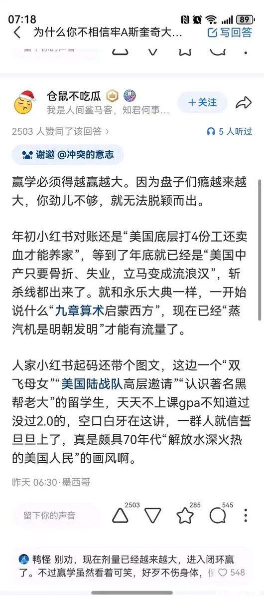

RT @LVTGW666: 本质还是老中的自己日子好不好不重要，重要的是得让老中觉得别人过的要比自己惨，从村逼谈论起自己村的有钱人债务缠身的喜笑颜开，到年初的大对账到现在的斩杀线满足民族主义叙事和老中隐秘欲望的双重大胜利。换言之老中的管理方法是最简单的，哪怕是高税收加负福利，你…


本质还是老中的自己日子好不好不重要，重要的是得让老中觉得别人过的要比自己惨，从村逼谈论起自己村的有钱人债务缠身的喜笑颜开，到年初的大对账到现在的斩杀线满足民族主义叙事和老中隐秘欲望的双重大胜利。换言之老中的管理方法是最简单的，哪怕是高税收加负福利，你只要在满足老中隐秘欲望上下点功 https://t.co/6nnoMtKLxZ